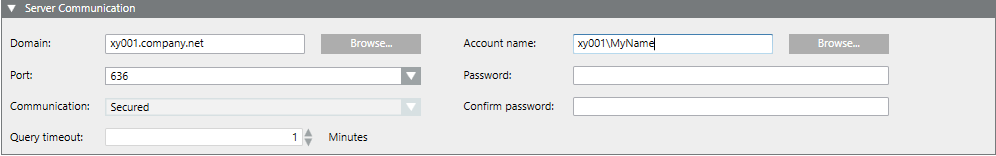

Configuring Domain
Scenario
The domain configuration must be set up once to get access to the domain groups. It supports one domain server only.

- Select Project > System Settings > Security.
- Select the LDAP tab and open the Server Communication expander.
- Enter the domain name in the Domain field, for example, xy001.company.net or click Browse to find the desired domain name.
- From the Port drop-down-list, select:
- 389 for unsecured connection
- 636 for secure connection
- In the Account name field, enter the account name, for example, xy001\MyName or click Browse to find the desired user name.
Domain Account and User NOTES:
The user must:
- have restricted rights with read access on groups, group membership and users in the directory server.
- have a password without an expiration date. If this is not possible, enter a user account with a password that will not expire soon. If not, the account will no longer work if the user password is expired.
- be a Domain Account user specified as a Specific account in the System Account in SMC.
This is to perform an active directory synchronization to import users from the active directory (LDAP) to Desigo CC. Setting a local user account or service account may cause the connection to fail as a local user account or service account may not have access to active directory (LDAP). - In the Password field, enter the password. If you have a restored project this field may display password of the domain account user specified in the project on the source machine. You must make sure that the password of the domain account user must be the most recent and updated.
- In the Confirm password field, confirm the password.
- In the Query timeout field, enter the number of minutes from 1 to 60 (Default = 1 minute). In case of search time exceeds an information message will display.
- Click OK to continue.
- Click Save
 .
. - Click Check connection .
If the connection fails and as a result the data decryption fails as well, see Data Decryption fails after a project is copied from one machine to another or after restoring the project in Troubleshooting Projects in SMC Troubleshooting. - A message displays.
- If the connection is successful, proceed to adding domain groups to the Group Mapping expander.
- If the connection is unsuccessful, check the settings for the domain name, port number and account name. - Click OK.